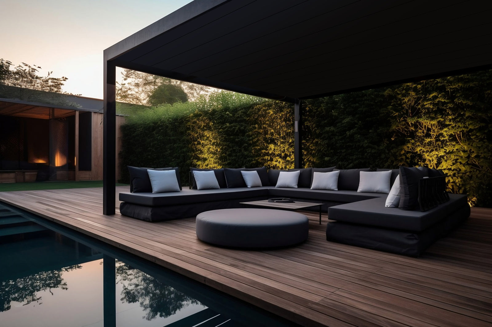

Konštrukcia
Oceľové stĺpy, hliníkový obklad
- Oceľové stĺpy a prievlaky
- Hliníkový obklad konštrukcie
- Práškový lak v odtieni z RAL palety
- Záruka kvality povrchov do 40 rokov

Ochrana pred krupobitím, snehom aj rozpáleným interiérom v lete. Oceľová konštrukcia Koverta s hliníkovým obkladom, alebo celohliníkový systém Soltec.
Z čoho je to postavené
Konštrukciu, povrch aj výplne riešime naraz, ešte pred výrobou — na hotovom prístrešku preto nevidno žiadne technické vrstvy.
Prejsť na nezáväznú ponukuKonštrukcia

Strecha

Výplne
Katalógové rozmery
Toto sú hotové veľkosti z katalógu. Ak vám žiadna presne nesedí, konštrukciu urobíme na mieru — rozmer je vec výroby, nie výberu z tabuľky.
Pre tri autá 1 rozmer
Čo je v cene


Z našich montáží
Fotografie z našich montáží. Každý prístrešok je robený na mieru pozemku.

Prístrešok pre jedno auto s bočnou lamelovou výplňou

Dvojmiestny prístrešok pri rodinnom dome

Prístrešok napojený na dom, vstup do garáže
Hliníkový prístrešok Soltec, Nitra

Prístrešok pre tri autá, Plavecký Štvrtok

Prístrešok pred vstupom do garáže
Časté otázky
Nenašli ste odpoveď? Zavolajte nám, poradíme aj bez záväzku.
+421 948 482 266Prístrešok do 25 m² pri rodinnom dome je spravidla drobná stavba, na ktorú stačí ohlásenie. Presné podmienky si overte na svojom stavebnom úrade — pri zameraní vám povieme, do čoho sa zmestíte.
Do betónovej pätky alebo do existujúcej spevnenej plochy. Spôsob určíme pri zameraní podľa podložia a podľa zaťaženia snehom a vetrom vo vašej lokalite.
Z rozmeru, typu strechy, počtu stĺpov a zvolených výplní. Doprava a montáž sú v cene. Presnú sumu dostanete po zameraní; konfigurátor dá orientačné číslo hneď.
Ďalší krok
Prídeme zamerať, navrhneme umiestnenie stĺpov a poviete si, čo s bokmi. Zameranie aj ponuka sú zadarmo.